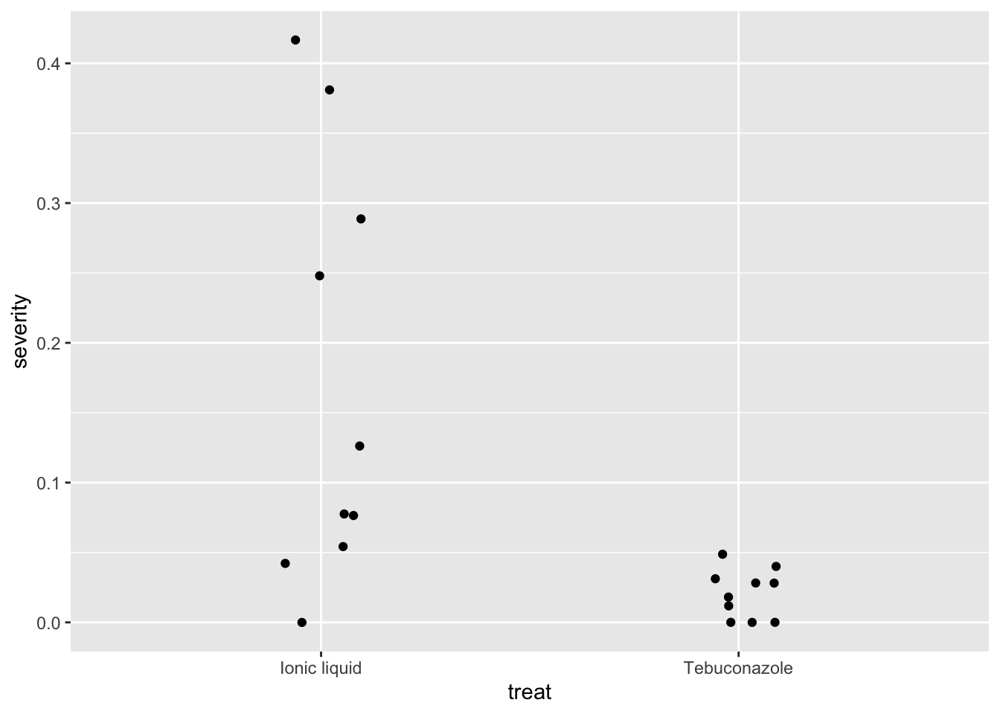
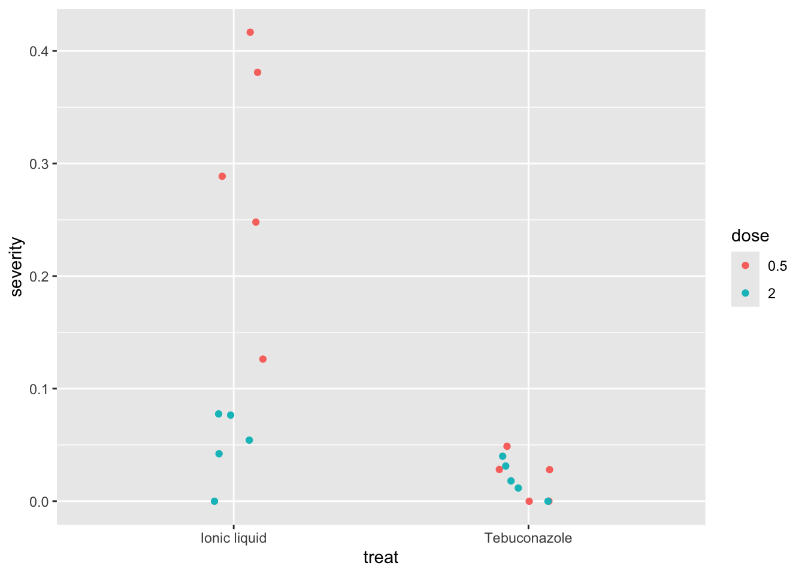
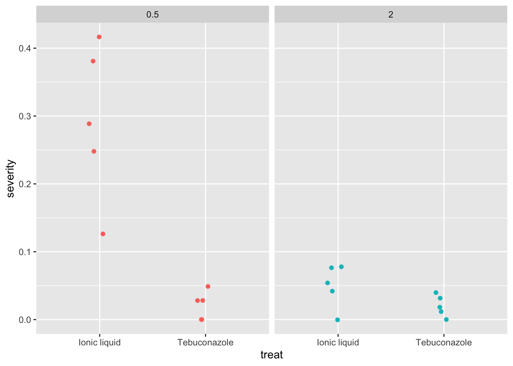
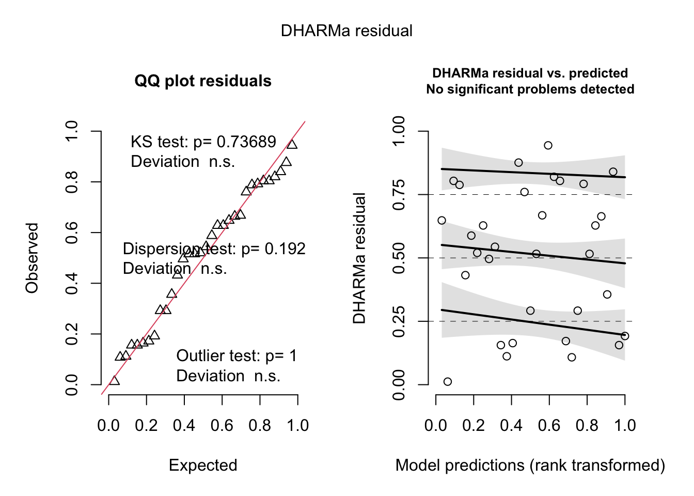
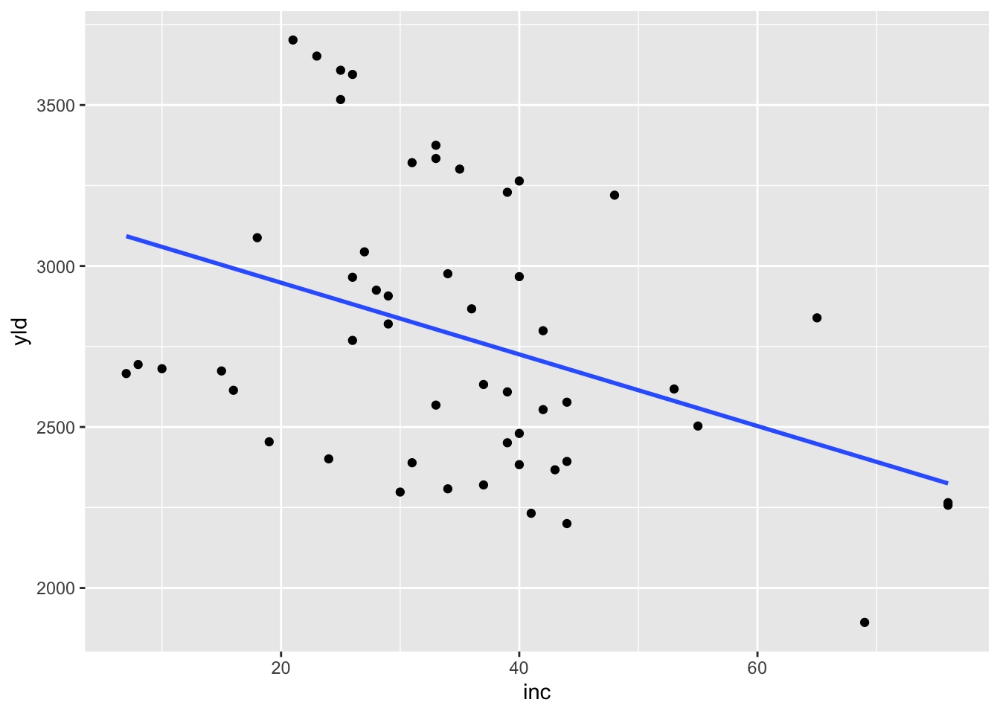
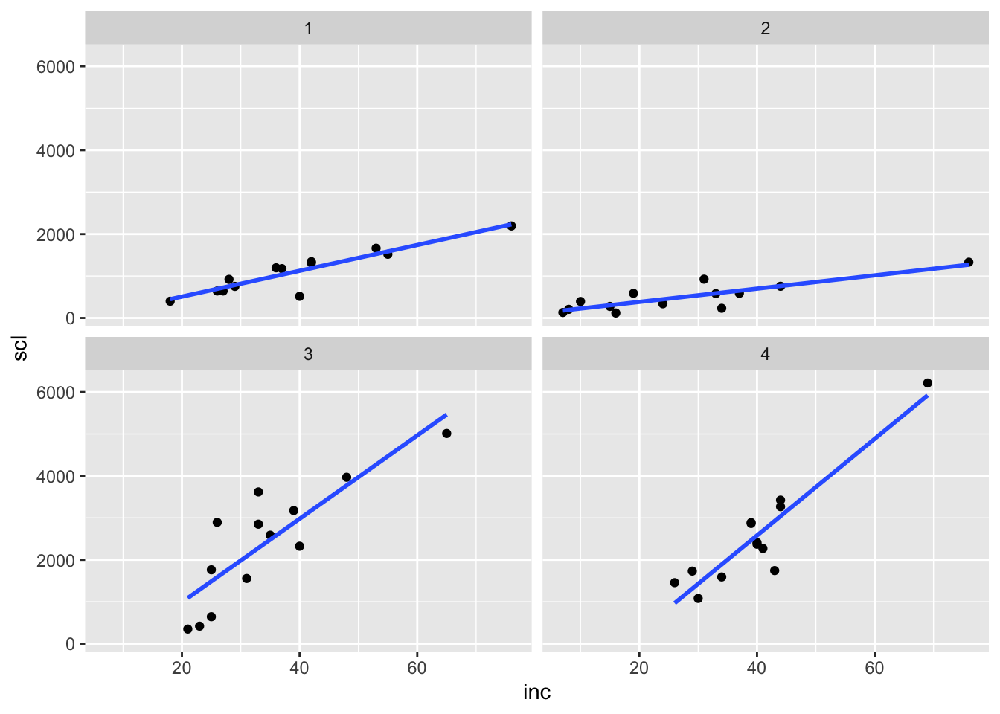
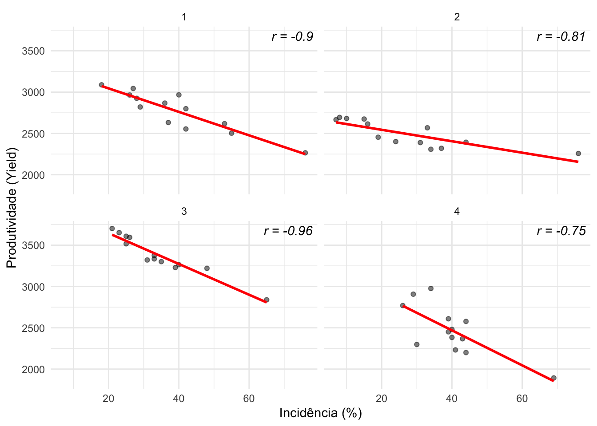
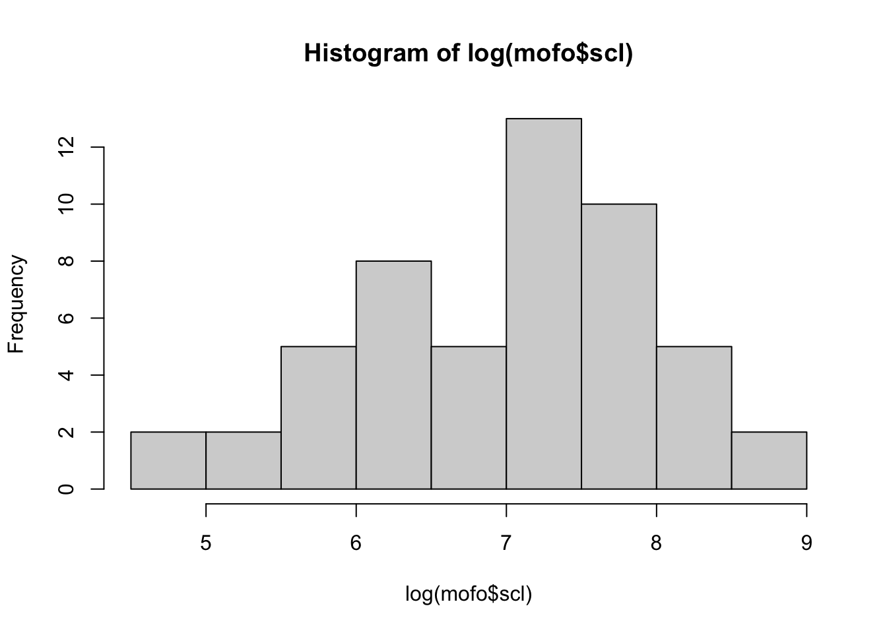

###Analisar os tipos de dados que tenho na tabela antes de qualquer coisa. Quais são discretos. Quais são contínuos??#Criar coluna incidencia = numero de sementes x severidadefungicidas2 <- fungicidas %>%mutate(incidencia = inf_seeds / n_seeds )fungicidas2
### Nao da pra visualizar tao bemfungicidas %>%ggplot(aes(treat, severity))+geom_jitter(width =0.1)

### Para melhorar colocamos corfungicidas %>%mutate(dose =factor(dose)) %>%ggplot(aes(treat, severity, color = dose))+geom_jitter(width =0.1)

### Separar em dois paineis para melhorar a visualização e tirar a legenda fungicidas %>%mutate(dose =factor(dose)) %>%ggplot(aes(treat, severity, color = dose))+geom_jitter(width =0.1)+facet_wrap(~ dose)+theme(legend.position ="none")

### Para visualizar a interaçãofungicidas %>%mutate(dose =factor(dose)) %>%ggplot(aes(treat, severity, color = dose))+geom_jitter(width =0.1)+facet_wrap(~ dose)+theme(legend.position ="none")
The following object is masked from 'package:dplyr':
select
Attaching package: 'TH.data'
The following object is masked from 'package:MASS':
geyser
cld(medias_m3)
dose = 0.5:
treat emmean SE df lower.CL upper.CL .group
Tebuconazole 0.0210 0.0273 16 -0.03690 0.0789 1
Ionic liquid 0.2921 0.0273 16 0.23420 0.3500 2
dose = 2.0:
treat emmean SE df lower.CL upper.CL .group
Tebuconazole 0.0202 0.0273 16 -0.03768 0.0781 1
Ionic liquid 0.0501 0.0273 16 -0.00781 0.1080 1
Confidence level used: 0.95
significance level used: alpha = 0.05
NOTE: If two or more means share the same grouping symbol,
then we cannot show them to be different.
But we also did not show them to be the same.
### agora quero ver se tem diferençao nas doses library(emmeans)medias_m3 <-emmeans(m3, ~ dose | treat )medias_m3
treat = Ionic liquid:
dose emmean SE df lower.CL upper.CL .group
2.0 0.0501 0.0273 16 -0.00781 0.1080 1
0.5 0.2921 0.0273 16 0.23420 0.3500 2
treat = Tebuconazole:
dose emmean SE df lower.CL upper.CL .group
2.0 0.0202 0.0273 16 -0.03768 0.0781 1
0.5 0.0210 0.0273 16 -0.03690 0.0789 1
Confidence level used: 0.95
significance level used: alpha = 0.05
NOTE: If two or more means share the same grouping symbol,
then we cannot show them to be different.
But we also did not show them to be the same.
#### Se nao der interação vc faz graficos separados. Como nao é nosse caso, fazemos a tabela Fungxdose e usamos letras para indicar significancia e relacao.
Tabela 1. Severidade média sob diferentes tratamentos e doses.
Tratamento
Dose 0.5
Dose 2.0
Ionic liquid
0,2921 A a
0,0501 B a
Tebuconazole
0,0210 A b
0,0202 A a
Médias seguidas pela mesma letra, minúscula na vertical ou maiúscula na horizontal, não diferem entre si pelo teste de Tukey (p > 0,05).
Segunda parte da aula
campo <-read_excel("dados_diversos.xlsx", "fungicida_campo")campo
trat emmean SE df lower.CL upper.CL .group
1 4219 201 21 3800 4638 A
2 4935 201 21 4516 5354 AB
8 5078 201 21 4659 5497 AB
3 5110 201 21 4691 5529 AB
5 5122 201 21 4703 5541 AB
7 5128 201 21 4709 5546 AB
4 5140 201 21 4722 5559 AB
6 5256 201 21 4838 5675 B
Results are averaged over the levels of: bloco
Confidence level used: 0.95
P value adjustment: tukey method for comparing a family of 8 estimates
significance level used: alpha = 0.05
NOTE: If two or more means share the same grouping symbol,
then we cannot show them to be different.
But we also did not show them to be the same.
####NO Gemini Gerar um grafico de jitter de prod por trat com media e intervalo de confianca e as letras separando as ,edias trat emmean SE df lower.CL upper.CL .group 1 4219 201 21 3800 4638 A
2 4935 201 21 4516 5354 AB
8 5078 201 21 4659 5497 AB
3 5110 201 21 4691 5529 AB
5 5122 201 21 4703 5541 AB
7 5128 201 21 4709 5546 AB
4 5140 201 21 4722 5559 AB
6 5256 201 21 4838 5675 B
# Carregamento das bibliotecas necessáriaslibrary(tidyverse)library(emmeans)library(multcomp)library(multcompView)library(DHARMa)# 1. Ajuste do Modelo (Blocos ao Acaso)m_bloco <-lm(prod ~ trat + bloco, data = campo2)# 2. Diagnóstico de Resíduos# É importante rodar isso antes de confiar na ANOVAplot(simulateResiduals(m_bloco))

# 3. Tabela de ANOVA# Verifica se existe efeito significativo de tratamento e blocoanova(m_bloco)
Analysis of Variance Table
Response: prod
Df Sum Sq Mean Sq F value Pr(>F)
trat 7 2994142 427735 2.6369 0.0402 *
bloco 3 105716 35239 0.2172 0.8833
Residuals 21 3406384 162209
---
Signif. codes: 0 '***' 0.001 '**' 0.01 '*' 0.05 '.' 0.1 ' ' 1
# 4. Médias Ajustadas e Teste de Tukey (Letras)medias_m_bloco <-emmeans(m_bloco, ~ trat)# O argumento correto é Letters (L maiúsculo)res_cld <-cld(medias_m_bloco, Letters = LETTERS) |>as.data.frame()# 5. Gráfico Final Arrumado# Unindo os dados brutos (jitter) com as médias e letras do modelocampo2 |>ggplot(aes(x = trat, y = prod)) +# Dados originaisgeom_jitter(width =0.05, alpha =0.3, color ="gray40") +# Médias e Intervalo de Confiança do modelogeom_point(data = res_cld, aes(y = emmean), color ="red", size =3) +geom_errorbar(data = res_cld, aes(y = emmean, ymin = lower.CL, ymax = upper.CL), width =0.1, color ="red") +# Adicionando as letras de agrupamentogeom_text(data = res_cld, aes(y = upper.CL, label = .group), vjust =-1, size =4, fontface ="bold") +# Estéticaylim(1500, 7000) +# Aumentei um pouco o topo para a letra não cortartheme_classic() +labs(x ="Tratamento fungicida",y ="Produtividade (Kg/ha)",title ="Produtividade por Tratamento",subtitle ="Médias ajustadas com IC (95%) e letras de Tukey" )
### objetivo aqui é ver a relacao entre as variaveis ###Visualizar mofo %>%ggplot(aes(inc, yld))+geom_point()+geom_smooth(method ="lm", se = F)+scale_color_binned( ~ study) ### para ver por estudo se realmente se vê a tendencia do todo
`geom_smooth()` using formula = 'y ~ x'

### onde se tem uma associacao mais forte?### Doença está relacionada a esclerodio???mofo %>%ggplot(aes(inc, scl))+geom_point()+geom_smooth(method ="lm", se = F)+facet_wrap( ~ study)
`geom_smooth()` using formula = 'y ~ x'

### Coeficiente de correlaçãocor.test(mofo$inc, mofo$yld, method ="pearson")
Pearson's product-moment correlation
data: mofo$inc and mofo$yld
t = -2.9274, df = 50, p-value = 0.005133
alternative hypothesis: true correlation is not equal to 0
95 percent confidence interval:
-0.5934601 -0.1223842
sample estimates:
cor
-0.3825092
study correlacao
Min. :1.00 Min. :-0.9567
1st Qu.:1.75 1st Qu.:-0.9141
Median :2.50 Median :-0.8574
Mean :2.50 Mean :-0.8546
3rd Qu.:3.25 3rd Qu.:-0.7979
Max. :4.00 Max. :-0.7468
#### Gemini# Exemplo de como calcular se você ainda não tiver o df pronto:library(dplyr)correlacoes_df <- mofo %>%group_by(study) %>%summarize(r_value =cor(inc, yld, use ="complete.obs")) %>%mutate(label =paste0("r = ", round(r_value, 2)))library(ggplot2)mofo %>%ggplot(aes(inc, yld)) +geom_point(alpha =0.5) +geom_smooth(method ="lm", se =FALSE, color ="red") +# Adicionando o texto da correlaçãogeom_text(data = correlacoes_df, aes(label = label), x =Inf, y =Inf, # Posiciona no canto superior direitohjust =1.1, vjust =1.5, # Ajusta o recuo para não encostar na bordafontface ="italic",inherit.aes =FALSE) +# Importante para não dar erro com o aes globalfacet_wrap(~ study) +theme_minimal() +labs(x ="Incidência (%)", y ="Produtividade (Yield)")
`geom_smooth()` using formula = 'y ~ x'

hist(mofo$yld)
hist(mofo$inc)
hist(log(mofo$scl))

Me perdi e pedi pro Gemini
library(ggplot2)library(dplyr)# --- PASSO 1: Cálculos Fora do Gráfico ---# Cálculo por estudomofo2 <- mofo %>%group_by(study) %>%summarise(r =cor(inc, scl, use ="complete.obs"))# Texto para o gráficor_global <-cor(mofo$inc, mofo$scl, use ="complete.obs")label_r <-paste0("r global = ", round(r_global, 2))# --- PASSO 2: Gráfico Unificado ---# Garantimos que o dado principal é o 'mofo'ggplot(data = mofo, aes(x = inc, y = scl)) +# Pontos coloridos por estudogeom_point(aes(color =factor(study)), alpha =0.5) +# Reta Global (Preta)geom_smooth(method ="lm", se =FALSE, color ="black", linetype ="dashed") +# Reta por Estudo (Coloridas)geom_smooth(aes(color =factor(study)), method ="lm", se =FALSE, size =0.5) +# Adicionando o texto do r globalannotate("label", x =Inf, y =Inf, label = label_r, hjust =1.1, vjust =1.5, fill ="white") +# Formataçãotheme_classic() +labs(x ="Incidência (%)", y ="scl",color ="Estudo",title ="Correlação Global e por Estudo")
Warning: Using `size` aesthetic for lines was deprecated in ggplot2 3.4.0.
ℹ Please use `linewidth` instead.
`geom_smooth()` using formula = 'y ~ x'
`geom_smooth()` using formula = 'y ~ x'